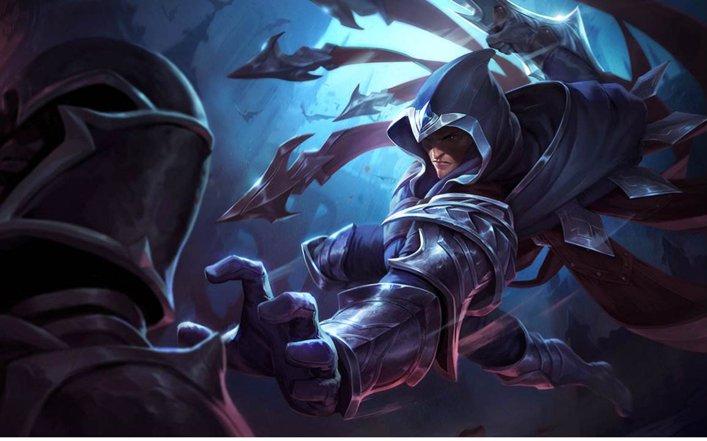

| Q技能 | W技能 | E技能 | R技能 |  |
诺克萨斯地底通道的黑暗，尖刀上令人安然的光芒，这就是泰刃最早的记忆。他不知何为家庭，何为温暖，何为善良。听着他所偷金币的叮当声，靠着一堵可以让他倚靠的墙，这就是他所期望的归属。凭借他的机智与娴熟的偷窃技巧，泰隆在弱肉强食的诺克萨斯地下世界艰难地维系着生活。 他真正的名声则来自他用刀的高超技巧。许多组织都派刺客胁迫他：要么加入他们，要么死。泰刃则用他的行动作出回应，人们要么在街边的阴暗角落，要么在诺克萨斯的壕沟中发现这些杀手的尸体。多年混迹底层的生活使泰刃明白，做事最好不要浪费——他收缴掉那些试图刺杀他的失败者的武器，并渐渐收集起来，武器存量数不胜数。 针对泰隆的刺杀行动变得越发的危险，直到一名同样持刀的刺客与他进行了一场真正的较量。让泰隆震惊的是，他的武器居然被缴去。眼看着刺客的最后一刀就要落下，他却表明了自己的真实身份，此人竟是Du Couteau将军(卡特琳娜与卡西奥佩娅的父亲)。将军可以给他诺克萨斯高阶军官特使所具有的生活，而他所要的，则是泰隆的效忠。泰隆接受了这个条件，但他只为Du Couteau服务，因为他只接受他比他强大的人所下放的命令。泰隆依旧行走在黑暗之中，执行Du Couteau的刺杀命令，直到有一天将军失踪。泰隆的怀疑带领他走向了战争学院的大门，加入了战争学院，寻找对将军失踪事件负责的组织。 "你只能在DuCouteau家族看到瓦罗然大陆上最致命的三名用刀高手：我的父亲，我，泰隆。" ——卡特琳娜，不详之刃